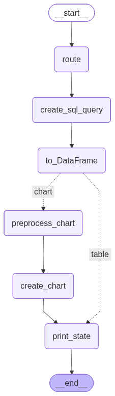

This project combines predictive lead scoring and conversational business intelligence in one application. A lead scoring pipeline estimates which users are most likely to purchase, and the resulting probabilities are written back into a SQLite database for later analysis.
On top of that, the project provides a Streamlit-based AI copilot that lets users ask questions about customer, product, and transaction data in plain English. The system uses LangChain and LangGraph to translate user questions into SQL, run the query, and return either a data table or a Plotly chart depending on the request.
Link to app: AI Copilot for Customer & Sales Analytics ↗
Customer and sales data often sit inside databases that non-technical teams cannot easily explore on their own. Simple questions such as which leads are most likely to purchase, which products generate the most revenue, or how sales change over time usually require SQL knowledge or support from a data team.
This project addresses that problem by combining lead scoring with a natural-language analytics interface. Instead of relying on manual SQL queries, the system allows users to interact with the database through chat and receive structured outputs as tables or charts.
Workflow Overview: The diagram below shows how the app routes a user question, generates SQL, prepares the result, and returns either a table or a chart.

Python & Data Work: pandas, sqlalchemy, data preparation, dataframe operations, session state management
Machine Learning: H2O, H2O AutoML, binary classification, lead scoring, model saving/loading
LLMs & AI Engineering: OpenAI API, LangChain, LangGraph, prompt design, SQL generation, routing logic, tool-based workflows
Data Visualization: Plotly, Plotly Express, dynamic chart generation, chat-based analytics interface
Deployment: Docker, Hugging Face Spaces, Streamlit applications
Users can ask plain-English questions such as what tables exist in the database, what a table contains, which customers have the highest predicted purchase probability, what the top products are by revenue, or how sales evolve over time.
On the modeling side, the project adds predictive value by scoring leads and storing those probabilities directly in the database. On the application side, it improves accessibility by allowing users to query and visualize data without writing SQL manually or setting up the project locally.
It demonstrates how AutoML, SQL, LLMs, interactive visualization, and public deployment can be combined into a business analytics tool for customer and sales use cases.